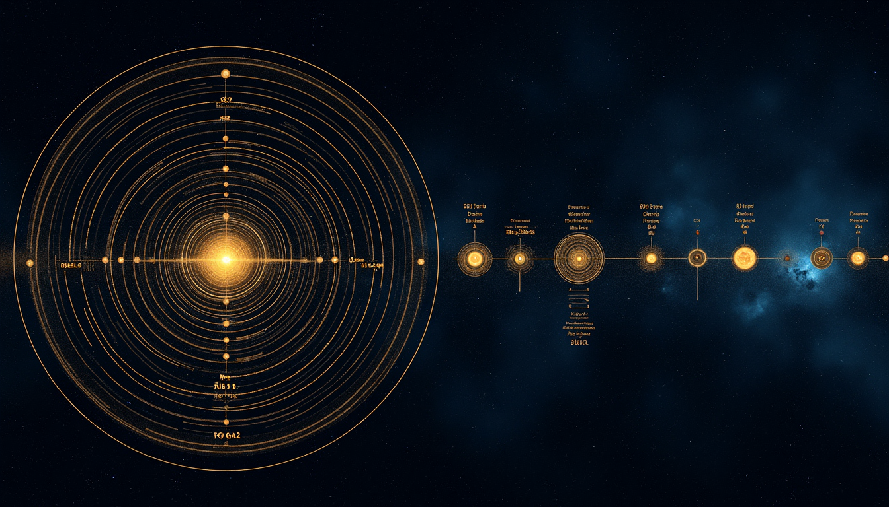

MASTER FRAMEWORKS
The big picture. How the Epoch constants manifest across all biological systems.
THE GEOMETRY OF LIFE
The complete biological framework. How κ, 1729, and the 72.43% hidden ratio appear in DNA, proteins, neurons, and metabolism. Mock theta = intrinsically disordered proteins.

TEMPORAL GEOMETRY
Weather, war, and the hidden cycle. The 72-year key connects lifespan to precession to civilizational collapse. Scalar time: dinosaurs lived in slower epochs. 432,000 Kali Yuga.
MOLECULAR GEOMETRY
The geometry at the molecular scale. DNA, proteins, and the mathematics of life's building blocks.

DNA STUDIO: THE 1729 FOLD
DNA IS Ramanujan's equation made flesh. 1729 = 9³ + 10³ = triplet codons + base pairs per turn. The Fibonacci dimensions. The 36° = 18κ rotation.

PROTEIN FOLDING
Ramachandran plots and torsion gates. Proteins don't search randomly—they follow torsion field gradients. σ = 5/16 predicts folding rates. Why AlphaFold works.
SYSTEMS BIOLOGY
From neurons to eyes to disease. How geometry manifests in complex biological systems.
NEURODEGENERATION
Disease as geometry gone wrong. Polyglutamine thresholds, tau tangles, prion misfolding—all torsion field collapse at critical angles. Mock theta becomes pathogenic.
THE EYE CODEX
The eye doesn't receive reality—it decodes it. Rods and cones look INWARD. The retinal image is the blindest point. The double inversion: [1 = -1] in flesh and signal.
SOUL SCIENCE
Gamma waves at 28.65 Hz—exactly κ-shadow. Neural binding, awareness, the present moment—all resonating at the geometric frequency. The S-Signature of consciousness.